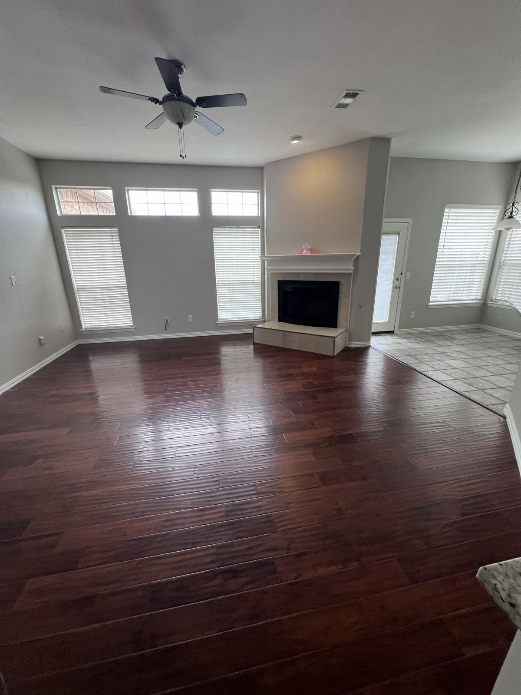

Move-In & Move-Out Cleaning Across Dallas–Fort Worth
Moving is stressful enough. We'll clean the empty home top to bottom so you can hand over the keys — or unpack — without a second thought. Serving all of DFW from Richardson, with instant pricing and online booking, open 7 days.
★★★★★ 5.0-star rated on Google · Background-checked team · Open 7 days, 8:30 AM–7:30 PM · Locally owned, serving all of DFW

One less thing on your moving checklist
Whether you're a renter trying to leave your apartment in great shape, a homeowner getting ready for closing, or a family moving into a new place, an empty home is the best chance to clean it properly. No furniture in the way, no boxes, no excuses — just every surface, cabinet and corner, done right.
Moving out? We'll leave your old place clean for the next tenant, buyer or final walkthrough, so you can focus on the move itself.
Moving in? Start fresh. We'll clean your new home before your things arrive, so the first time you open the cabinets, they're actually clean.
Your move-in / move-out cleaning checklist
Kitchen
- Inside of all cabinets, plus cabinet fronts and handles
- Countertops, backsplash and sink scrubbed and sanitized
- Stovetop, drip pans and range hood exterior cleaned
- Appliance exteriors cleaned, plus the inside of the microwave
- Inside the oven and inside the refrigerator
- Floors vacuumed and mopped, including edges
Bathrooms
- Tubs, showers, glass and tile scrubbed of soap scum and build-up
- Toilets cleaned inside, outside and around the base
- Inside vanity cabinets
- Mirrors, sinks and counters cleaned, plus towel bars and toilet paper holders
Every room
- Walls and baseboards spot-cleaned
- Door knobs, door frames, light switches and outlet covers
- Window sills wiped and blinds dusted
- Ceiling fans and light fixtures dusted
- Closet shelving wiped inside
- Hard floors mopped and carpets vacuumed
Have a lease or buyer checklist? Add any specific requests to your booking notes so we can confirm them with you before your clean.
Made for walkthroughs
Landlords and buyers notice the inside of the oven, the shower glass and the baseboards. Those are exactly the spots we spend our time on. Book your clean for after the movers leave and before your walkthrough, and give yourself a buffer in case anything comes up.
Realtors and property managers: if you have homes turning over regularly, call us at (469) 210-8005 to set up a simple way to book cleans between owners or tenants. SparkleBook also offers a Multiple Properties option for bulk quotes.
Detail work, done by people you can trust
We're a locally owned Richardson company. Every team member is background checked, and we'd rather take a little longer than leave the corners undone. We use professional-grade, eco-conscious products, and we're open seven days a week — handy when your moving date lands on a weekend.
"Everything looked spotless, organized, and professionally handled. If you want someone you can trust to keep your space looking its best, Lindsey is the one. Highly recommend!" — M. Proctor
"So easy to communicate with — every request I made was followed with questions, which showed me they care more than the average cleaner who may just sweep and leave." — Hyun C., Plano, TX (Yelp review)
Moving within Dallas–Fort Worth?
Book a move-out clean for your old place and a move-in clean for your new one at the same time — one less call to make. Once you're settled, a recurring plan keeps the new place feeling new, at our reduced recurring rate.
Bringing a dog or cat to the new place? Schedule the move-in clean before they arrive, and see our pet-friendly house cleaning for keeping up with the hair once you're settled.
Does the home need to be empty?
It's best. Empty homes let us reach every cabinet, closet and baseboard. If a few items are still there, just let us know in your booking notes.
Will a move-out clean get my deposit back?
We clean with walkthroughs in mind and focus on the spots landlords check. Deposit decisions are up to your landlord, so check your lease for any specific cleaning requirements and add them to your booking notes.
Do I need to be there?
No. Leave a key, lockbox or entry code and let us know how to get in.
How far ahead should I book?
As soon as you know your date. Moving days cluster around the end of the month, so booking early gives you the best choice of days and arrival windows.
Do the utilities need to be on?
Yes — we need running water and electricity to clean properly.
Lock in your moving-day clean now
See your price in about two minutes and pick the day that fits your move. Serving homes all over Dallas–Fort Worth.